QuickieFix · User Manual
| Version | 2.0 |
| Date | 15 July 2026 |
| Audience | Sole tradies & company tradies |
| App | my.quickiefix.app · Android app |
QuickieFix is New Zealand's on-demand trades marketplace. Customers post a job, and it is dispatched to nearby, verified tradies in your trade. You see the job, decide whether you want it, and — if you're first to accept — it's yours. You deal directly with the customer, do the work at your own published rates, and invoice them yourself.
| Item | How it works |
|---|---|
| Platform fee | A flat NZ$15 per completed job. Nothing else. |
| Your first 5 jobs | Free — every approved tradie starts with 5 free job credits. |
| Lead fees | None. You are never charged to see, view, or decline a job. |
| Commission | None. QuickieFix takes no percentage of your labour or parts. |
| Your labour | Customers pay you directly at your published rates. You keep 100%. |
| Parts & materials | Extra, charged by you — but they must be agreed with the customer on site before fitting (platform rule, see Section 8). |
| When you're charged | Only when a job reaches Completed. Declined, released, or cancelled jobs cost nothing. |
| How you pay | Fees accumulate during the month and are invoiced monthly (on the 1st) to your billing email. There is no in-app payment. |
⚠️ Unpaid platform fees put your account on a dispatch hold. If your QuickieFix invoice isn't settled, a "Dispatch paused" banner appears on your dashboard and you stop receiving new jobs. Dispatch resumes as soon as the invoice is cleared.
💡 The maths is simple: a $15 fee on a job where you might bill $150–$500+ of labour and parts. If a job doesn't complete, you owe nothing.
Open my.quickiefix.app (or the Android app), choose Join as a tradie, and complete the application form.
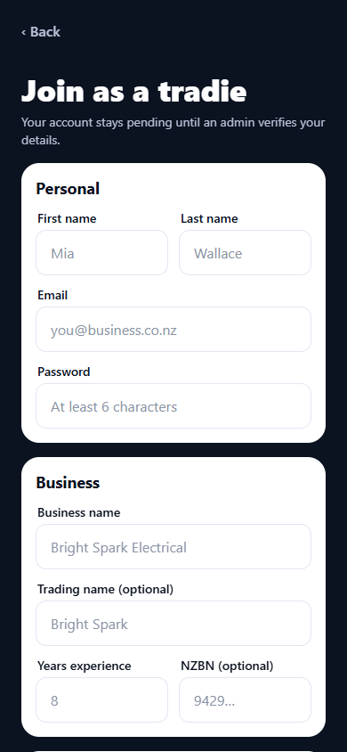
The tradie application: personal details, business details, trades, licence, and service radius.Your account stays pending until an admin verifies your details — licence, qualifications, and business information. While pending:
💡 Use the waiting time well: set your rate card (Section 10) so you're ready to go live the moment you're approved. On approval you also receive your 5 free job credits.
The dashboard is your home screen — everything you need on a working day lives here.
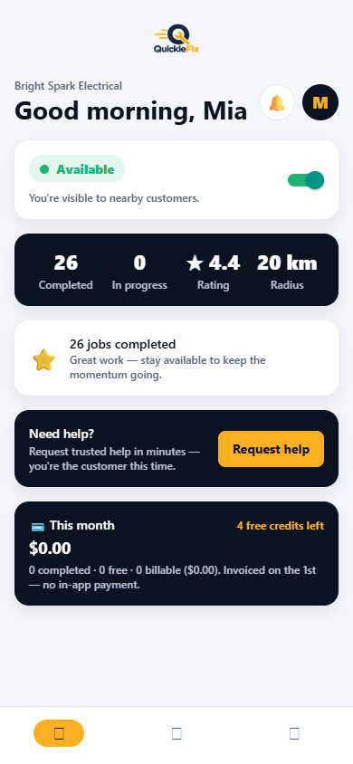
The dashboard: availability toggle, operational summary, performance banner, and the money panel.The availability card sits right under your greeting because it's the most important control in the app:
⚠️ Keep your availability honest. Being Available and ignoring offers hurts customers waiting for help — and your dispatch standing (Section 12). If you're done for the day, toggle off.
💡 Location permission is requested when you go Available. If GPS is off, you can still go Available, but distance-based matching works best with location on.
| Element | What it shows |
|---|---|
| Operational summary (navy card) | Completed jobs, jobs in progress, your star rating (★ New until your first ratings), and your service radius — plus when you last completed a job. |
| Performance banner | An achievement badge: 🚀 Ready to earn (new), ⭐ N jobs completed, or 🏆 Top-rated pro (5+ ratings averaging 4.8★+). |
| Active job card | GREEN — deliberately the one live thing on the screen. Shows the trade, customer, status, and address. Tap to manage → opens the job screen. |
| 💳 This month (money panel) | Completed jobs this month, how many were free (credits), how many are billable, the fee total, and your free credits remaining. "Invoiced on the 1st — no in-app payment." |
| 🔔 Bell badge | A count of pending offers and selections. |
| ⏸️ Dispatch paused | Appears only if you're on a payment hold (Section 11). |
At the bottom of the dashboard is a Need help? card with a Request help button. Tradies can request services from other tradies exactly like a customer — your request shows under Your requests with live tracking.
💡 Blown a fitting outside your trade? A sparky can summon a plumber in minutes, and vice versa.
When a customer posts a job in your trade within your radius, you get a push notification — for example "⚡ New job: Plumber" — and an amber offer card appears at the top of your dashboard.
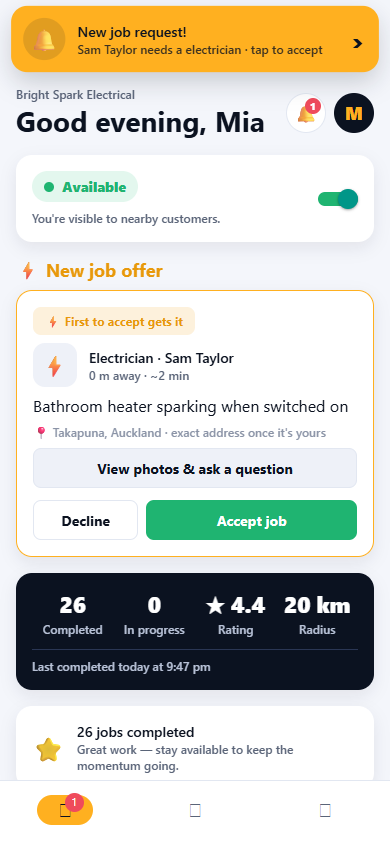
A new job offer lands at the top of the dashboard — always first, never buried under stats.Jobs go out in waves to the nearest available tradies: the 3 closest first, widening to 8 at 90 seconds, then to all remaining matches at 3 minutes. The earlier you respond, the better your chance.
The amber ⚡ New job offer card carries a "⚡ First to accept gets it" banner and shows:
| On the card | Meaning |
|---|---|
| Trade & customer name | e.g. Plumber · Sarah T. |
| Distance & ETA | e.g. 3.2 km away · ~8 min — measured from your phone's location. |
| Job description | The customer's own words (first two lines). |
| 📍 Area only | Suburb/city, e.g. 📍 Ponsonby, Auckland · exact address once it's yours. The street address stays private until you accept. |
| 🗓️ Wanted time | Shown on scheduled (non-ASAP) jobs. |
Your options, right on the card:
⚠️ First to accept gets it. These are live dispatch offers, not leads. If another tradie accepts while you're deciding, the offer is gone — the job screen will tell you it's been taken.
💡 Offers only appear while you have no active job in progress — you run one live job at a time per trade.
Not sure from two lines of description? Tap View photos & ask a question to open the full job screen.
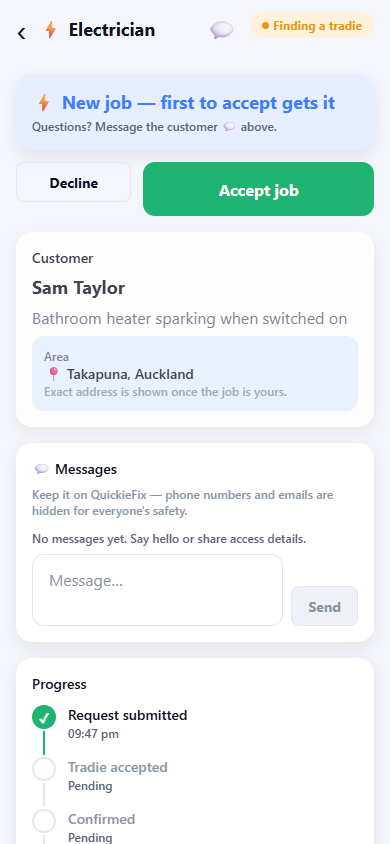
The offer detail: the decision comes first — Accept/Decline sit on top, details below.The screen is built so the decision leads: the "⚡ New job — first to accept gets it" card with Accept job and Decline buttons sits at the very top. The detail below is slightly faded until the job is taken.
Any candidate can message the customer before accepting — tap the 💬 icon in the header or scroll to the message thread. Ask about access, parking, the model of the appliance, whether the water's isolated — whatever helps you decide.
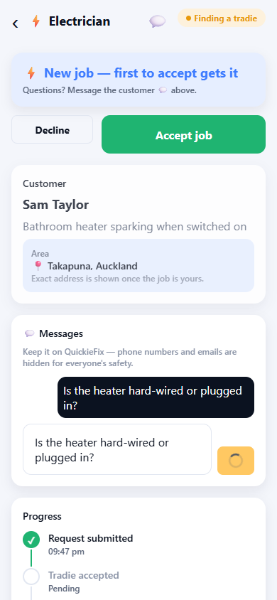
Pre-accept messaging: ask what you need to know before committing.💡 Contact details are masked. All pre-accept messaging runs in-app — neither side sees the other's phone number or email. Keep the conversation on the platform (Section 12).
⚠️ Asking a question does not reserve the job. While you're chatting, another tradie can still accept it.
Tap Accept job — on the dashboard card or the job screen. What happens next:
 Accepted: the exact address, map, and customer thread are now yours.
Accepted: the exact address, map, and customer thread are now yours.
For standard jobs the customer then confirms the booking (they have a 10-minute window); emergency jobs auto-confirm within about 3 minutes of your acceptance. Once confirmed, your travel controls appear (Section 7).
⚠️ Accepting is a commitment. The customer is told you're coming and other tradies stop being offered the job. Only accept work you genuinely intend to do. If something goes wrong before you arrive, use the release option (Section 7) — don't just go silent.
You carry one active job per trade at a time. While you're on a job, new auto-dispatch offers are held back until you complete it.
Some customers browse profiles instead of taking the first acceptor. Two extra card types can appear on your dashboard:
💡 Browse-and-choose selections are where your rating, rate card, and profile photo earn their keep — customers are comparing you against other tradies side by side.
Once the booking is confirmed, the job screen becomes your control panel.
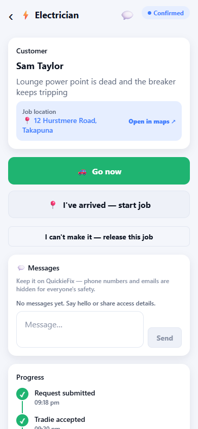
Travelling: navigation at hand, live location shared, arrival one tap away.💡 The customer sees you coming. While you're travelling, your live phone position is shared with the customer (updated roughly every 20 seconds) so their tracking screen shows a real distance and ETA. This ends when the job does.
Two ways to flip to On site:
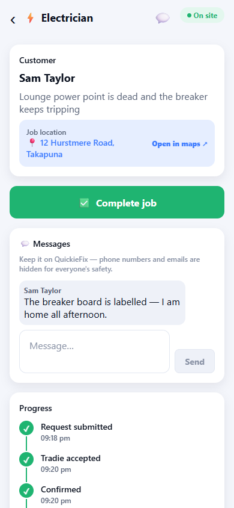
On site: the working clock is running; the Complete job button is ready when you are.The on-site timestamp matters: it starts your working time clock, which feeds your Timesheets (Section 9) and the durations on the completion summary — evidence for your invoice.
If your van dies, you're injured, or you can't reach the customer, use "I can't make it — release this job" (available while the job is accepted, confirmed, or travelling — not once you're on site).
What happens when you release:
⚠️ Releasing is an escape hatch, not a browsing tool. It disrupts a customer who was told you were coming — repeated releases damage your standing and future dispatch priority (Section 12). If you're only running late, message the customer instead.
When the work is done, tap ✅ Complete job on the job screen.
For a standard job, a short Invoice details form opens:
The completion record and QF- confirmation code go to this contact. Your own invoice should reference the code — it's the customer's proof the job was done through QuickieFix.
Agency jobs are different: if the job came through a property agency panel (Section 10), billing is locked to the agency — there's no form to fill. The screen shows "🏢 Billed to [Agency] · 🔒 set by the agency" and the completion record goes to the agency automatically.
If you fitted parts or used materials, record them before completing. Tap ＋ Add parts & materials (optional):
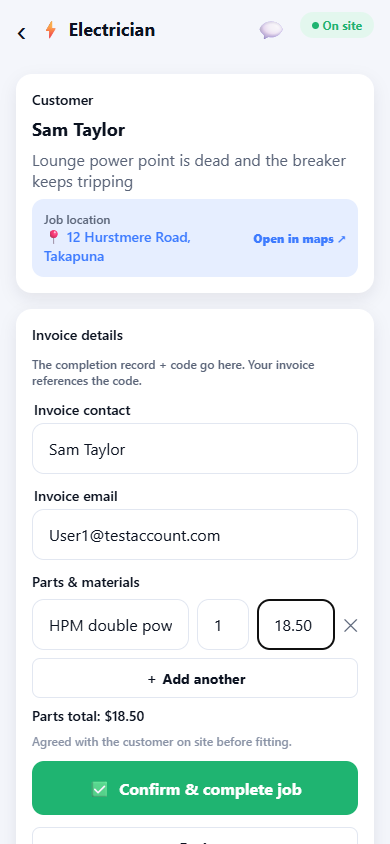
The parts editor: description, quantity, and price per unit, with a live running total.For each line enter:
| Field | Example |
|---|---|
| Part or material | 15 mm ball valve |
| Qty | 2 |
| $ each | 24.50 |
Tap ＋ Add another for more lines, ✕ to remove one. A live Parts total updates as you type. Leave the editor untouched if the job was labour only.
⚠️ Platform rule — no surprise charges. Every part and material must be agreed with the customer on site BEFORE fitting: what it is, and what it costs. Tell them, get a yes, then fit it. Parts appearing on an invoice that were never discussed are the single biggest source of complaints — and a pattern of surprise charges leads to removal from the platform. When in doubt, show the customer the parts editor before you tap Complete.
💡 The parts list you enter here appears on the customer's completion record, so what they agreed to on site is exactly what they see in writing.
Tap ✅ Confirm & complete job (or Complete job on agency jobs). The server then:
The completed screen shows a job summary (confirmation code, invoice contact, total duration, and working time on site) and a Rate the customer form — stars plus quick tags like Good communication, Easy access, Respectful, Clear brief, Would work with again. Your feedback stays private and helps other tradies.
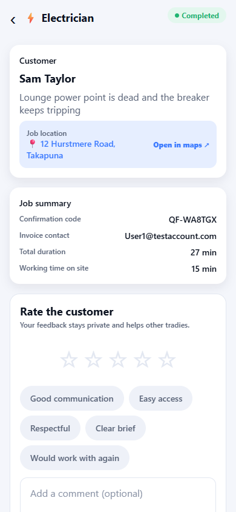
All done: summary, confirmation code, and the customer rating form.The Timesheets tab is your automatic job history — every completed job, with the timing evidence you need to invoice.
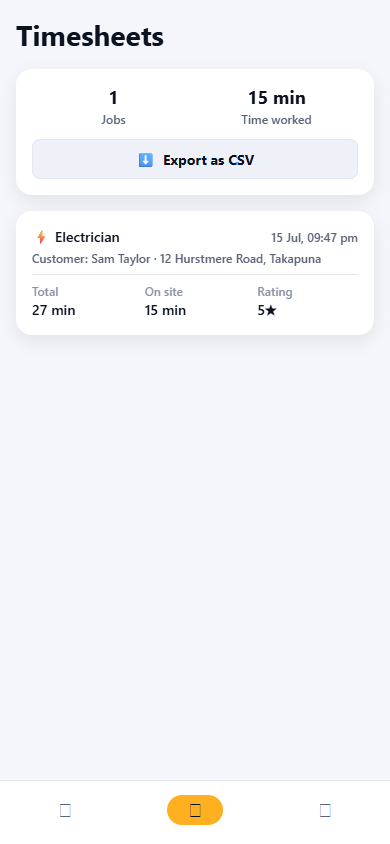
Timesheets: every completed job with total and on-site durations, ready to export.At the top: your total jobs and total time worked. Each job card shows:
Tap ⬇️ Export as CSV to share the full timesheet to email, Drive, or your accounting software — handy at invoicing time and for your records.
💡 The on-site duration is captured by the arrival geofence and completion timestamps — an objective record if a customer ever queries the hours on your invoice.
The Profile tab holds everything that defines how you appear and get dispatched.
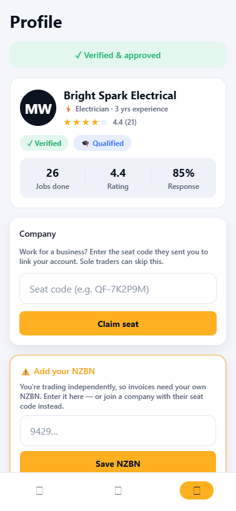
Profile: approval status, rate card, company seat, agency panels, trades, and service radius.Your rate card is shown to customers before they book you — on your profile in browse-and-choose, and the moment you accept a dispatch job. Independent tradies must set one before going live (the dashboard prompts you until it's done):
| Field | Required? |
|---|---|
| Hourly rate ($) | Yes |
| Call-out fee ($) | Optional |
| After-hours call-out ($) | Optional |
⚠️ These are the rates you must honour on the job (Section 12). Keep them current — customers book on the strength of them.
If you trade independently, your invoices need your own NZBN. A warning card sits on your Profile until you've saved one (or joined a company). Your saved NZBN shows under Trades & qualifications.
Work for or with a trades business? They send you a seat code (e.g. QF-7K2P9M). Enter it under Company → Claim seat, then tell the app how you work with them — this changes your identity and billing:
| Employee | Contractor | |
|---|---|---|
| You appear as | Your personal name, trading under the company's NZBN and brand | Your own business name and NZBN |
| Rates | Company rate card (your rate editor is locked 🔒) | Company rates on company work |
| Invoicing | Through the company | You invoice the company for the work |
| Company brand | On your jobs | Only on company-sourced jobs |
| If you leave | Your own business identity and personal rate card are restored automatically | You simply unlink — your identity never changed |
The claim shows pending until QuickieFix confirms your details match, then flips to Verified. While verified, only the company can remove you from their team; you can leave from your side at any time (Leave company).
Property managers run approved panels of tradies for their managed rentals. If an agency works with you, they'll give you an agent code in the form QF-AG-XXXX (e.g. QF-AG-7K2P).
Once approved, jobs at that agency's managed properties dispatch straight to you — steady, recurring maintenance work. Two things to know:
Every newly approved tradie gets 5 free job credits. Each completed job consumes a credit until they're gone — those jobs show as free in the money panel, with your remaining credit count always visible on the dashboard.
If you hold a company seat, fees for company-sourced jobs bill to the company, not to you. Jobs you source yourself as a contractor remain on your own account.
Your account is placed on a payment hold: the dashboard shows "⏸️ Dispatch paused" and you receive no new jobs. You can still finish any active job. Dispatch resumes automatically as soon as the invoice is settled.
💡 Query a fee — say a job was completed by mistake — through Help & support on your Profile before the invoice run, and it can be corrected on the invoice.
QuickieFix works because customers trust what they see. These rules protect that — and your pipeline of work.
After every job, the customer rates you (and you rate them). Your average shows on your dashboard, your profile, and to customers browsing tradies. Standing matters mechanically:
💡 The formula is boring and it works: keep the toggle honest, turn up when you said, agree every dollar before it's spent, and finish the job in the app. Do that and the ratings — and the job flow — take care of themselves.
QuickieFix · New Zealand · Questions? Raise a ticket via Help & support on your Profile.